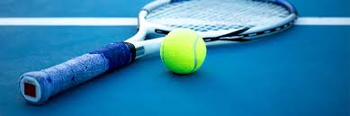

Hey! I am a year 9 student currently at Hurlstone Agricultre high school. The subject i do include things like: HSIE, Maths, English, Comerce, Science, PDHPE, IST and others. I love to code and play games. My favorite game is Kerbal Space Program. It is a simulation game about exploring the solar system and beyond in spacecrafts that you build and control. The purpose of the game is to explore everyplanet and create amazing spaceships that will power the kerbal civillization into the future. As you progress further into the game you will unlock more and more techs. It is a very cool game.
Tennis is another thing I enjoy doing very much. Tennis is a sport where you try to hit the ball back and forth over a net until somone misses the ball or hits it out of the court. Tennis. I enjoy tennis as it is a easy game to play and can be played with up to 4 people. There are also many competions out there and there is always a prize aka a trophy.
